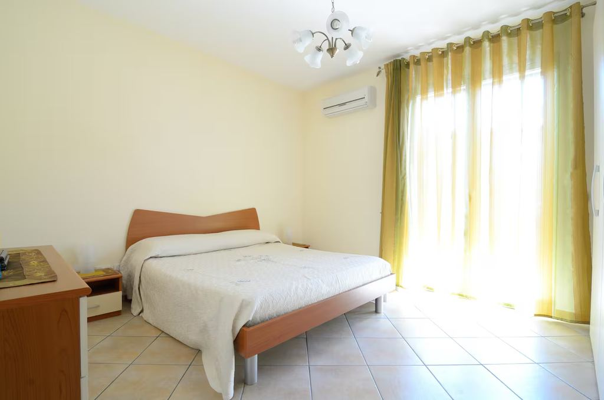
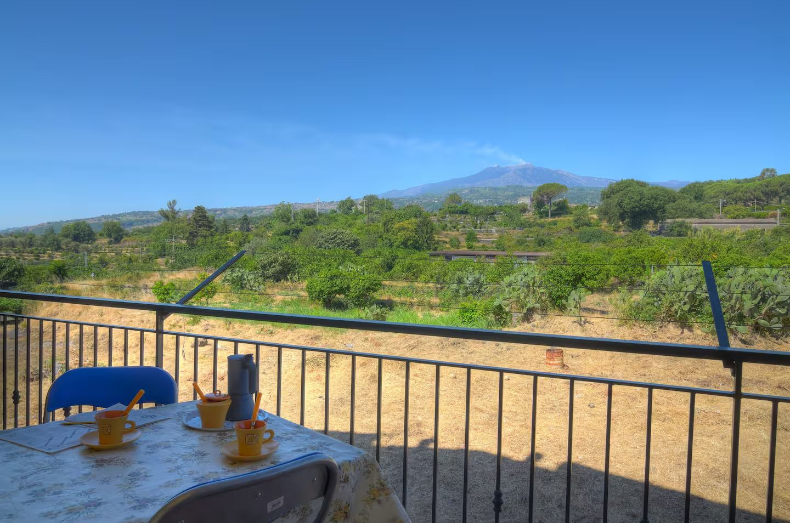
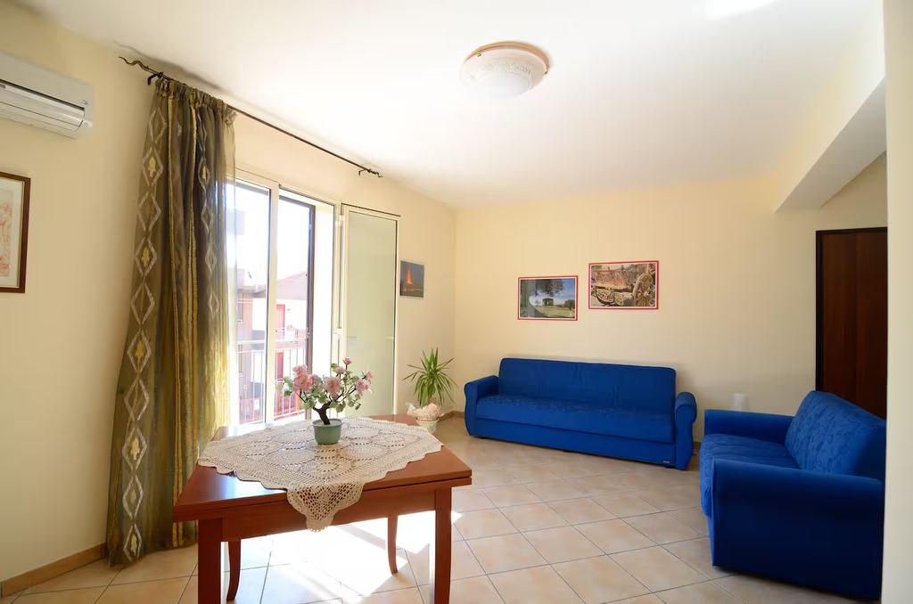
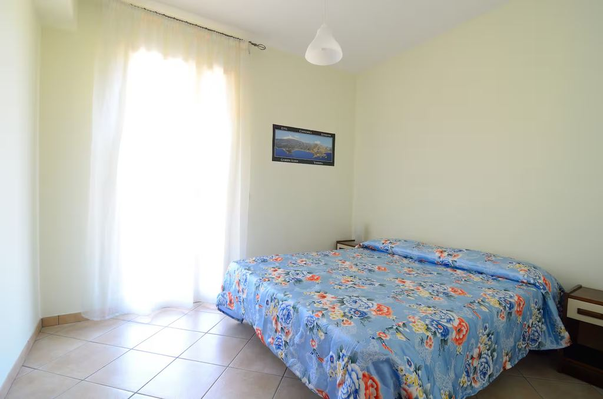
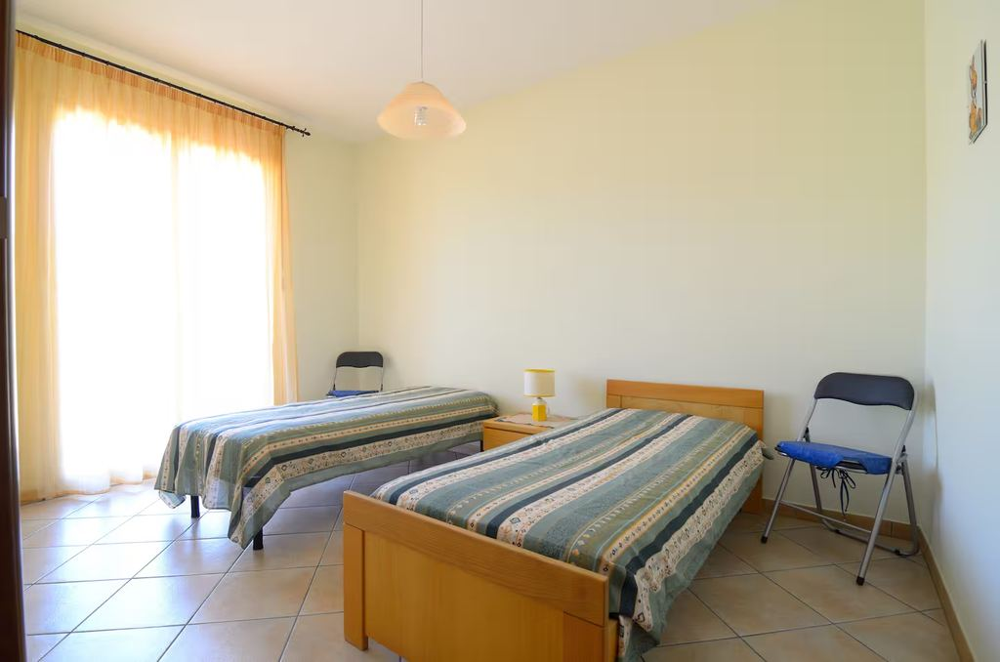
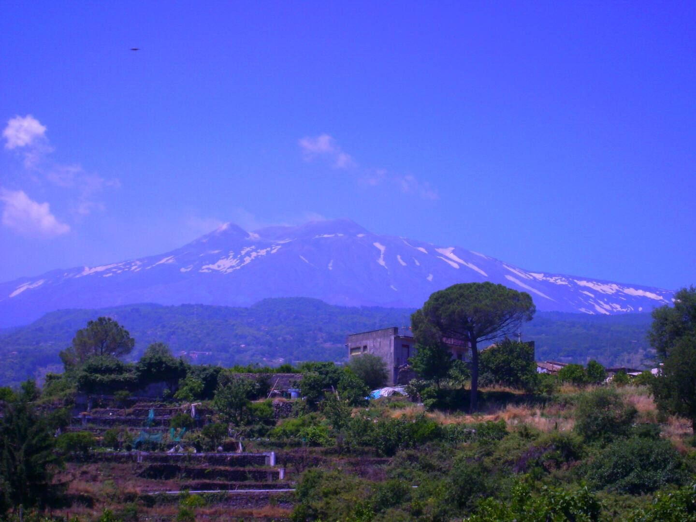

Camera 1
1 letto matrimoniale grande

Piedimonte Etneo · Sicilia orientale
Una casa affacciata sul vulcano, a venti minuti dal mare Ionio. Da qui la Sicilia orientale comincia sul balcone.
La casa
Piedimonte Etneo sta esattamente nel mezzo: alle spalle il versante nord del vulcano, davanti la riviera ionica che scende verso Giardini Naxos e Taormina. È un paese di lava e agrumi, dove la vita scorre più lenta che sulla costa e dove, la sera, l'aria arriva già fresca dalla montagna.
L'appartamento occupa il primo piano di una palazzina tranquilla, con ascensore. Tre camere, due bagni e ampi balconi da cui l'Etna si vede per intero: è la stessa vista che trovate nella prima fotografia di questo sito. La cucina è attrezzata davvero, dalle pentole ai taglieri, per chi ha voglia di comprare al mercato e mettersi ai fornelli. Lenzuola e asciugamani sono forniti; il parcheggio in strada è libero e gratuito.
Lo svincolo di Fiumefreddo di Sicilia, sulla A18 Messina-Catania, è a pochi minuti di auto. È il vantaggio meno appariscente della casa e forse il più utile: da qui si raggiunge tutta la Sicilia orientale senza attraversare i paesi della costa.
Ad accogliervi è Raffaele, che ospita qui dal 2012.

Spazi e servizi
Tutto quello che segue è verificato sull'annuncio ufficiale della casa.
Due matrimoniali e una con letti singoli, 6 letti in totale.
Doppi servizi, più un locale lavanderia con lavatrice.
Ampia e arredata nei dettagli, con tavolo e affaccio sul balcone.
Con vista panoramica sull'Etna: la colazione si fa fuori.
Connessione inclusa in tutto l'appartamento.
Impianto a pompa di calore, utile d'estate e nelle sere d'inverno.
Accesso comodo anche con bagagli o passeggino.
Sosta gratuita in strada. Non c'è posto auto riservato nell'alloggio.
Zona giorno ampia, con divani e tavolo da pranzo.
Locale dedicato con lavabiancheria.
La casa è tutta vostra, fino a 6 ospiti.
Lenzuola e asciugamani sono forniti dalla casa.

1 letto matrimoniale grande

1 letto matrimoniale grande, 2 letti singoli

2 letti singoli
Nota di sicurezza dichiarata dalla struttura: è presente un rilevatore di monossido di carbonio; non è presente un rilevatore di fumo.
Fotografie
Dove siamo
Piedimonte Etneo si trova sul versante nord-orientale dell'Etna, a mezza costa tra il Parco del vulcano e il mare Ionio. È una posizione di passaggio: si sale verso Linguaglossa e Piano Provenzana in una manciata di minuti, si scende alle spiagge di Marina di Cottone e Fondachello in un quarto d'ora, si arriva a Taormina in circa mezz'ora.
A pochi passi dalla casa c'è la stazione della Ferrovia Circumetnea, il trenino che gira attorno al vulcano toccando Castiglione di Sicilia, Randazzo, Bronte e la Contea di Nelson: un modo diverso, e più lento, di vedere l'Etna.
Tempi di percorrenza in auto, indicativi, calcolati da Piedimonte Etneo.
Apri in Google MapsIl territorio
Dal vulcano al mare in mezz'ora. Distanze stradali indicative da Piedimonte Etneo.
Le fotografie dei luoghi qui sopra sono di fotografi che le hanno condivise su Unsplash. Il loro nome compare su ogni immagine e per esteso nella pagina dei crediti fotografici. Grazie a tutte e tutti.
Da chi ci vive
Poche cose, ma quelle che fanno davvero la differenza sul posto.
Gli ospiti
Conteggio calcolato e pubblicato da Airbnb sull'annuncio: indica quante recensioni citano quell'aspetto.
Idee di viaggio
Cinque giornate già pronte, costruite sulla posizione della casa.

Prenotazioni
Prenotate il vostro soggiorno tra l'Etna e Taormina. Disponibilità e prezzi aggiornati sui portali ufficiali.
Il pagamento e la cancellazione sono gestiti dal portale scelto.
Contatti
Per domande sulla casa, sugli orari di arrivo o su cosa fare in zona, rispondiamo in italiano e in inglese.
Prenotazione
Entrambi i portali mostrano le stesse date. Scegliete quello che usate di solito.